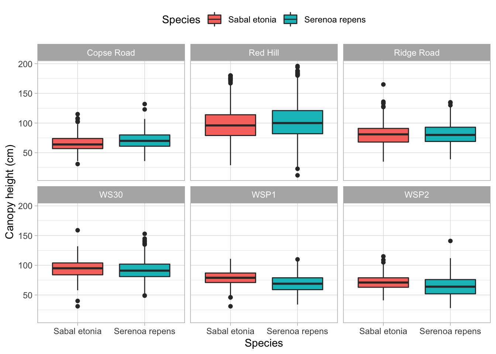
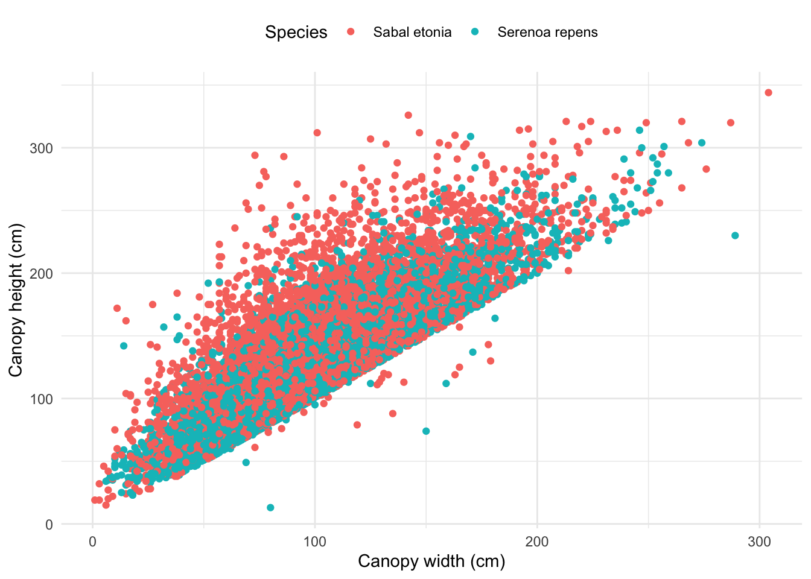

library(tidyverse)
library(here)
library(GGally)
library(broom)
library(jtools)
library(kableExtra)To access data, html and Rmd/qmd files:
Load packages
Read in data
palmetto <- read_csv(here("posts", "2021-02-23-blrpalmetto", "palmetto.csv"),
col_types = cols(.default = "c")) %>%
mutate(height = as.numeric(height)) %>%
mutate(species_name = case_when(
species == 1 ~ "Serenoa repens",
species == 2 ~ "Sabal etonia")) %>%
mutate(site_name = case_when(
site == 1 ~ "Copse Road",
site == 2 ~ "Ridge Road",
site == 3 ~ "WSP2",
site == 4 ~ "WS30",
site == 5 ~ "WSP1",
site == 6 ~ "Red Hill")) %>%
mutate(width = as.integer(width)) %>%
mutate(length = as.integer(length)) %>%
mutate(green_lvs = as.integer(green_lvs))Data exploration between species 1 (Serenoa repens) and species 2 (Sabal etonia).
ggplot(palmetto,
aes(x = species_name, y = height)) +
geom_boxplot(aes(fill = species_name)) +
facet_wrap(~ site_name) +
labs(x = "Species", y = "Canopy height (cm)") +
scale_fill_discrete(name = "Species") +
theme_light() +
theme(legend.position = "top")
Graph 2
ggplot(palmetto, aes(x = width, y = length)) +
geom_point(aes(color = species_name)) +
theme_minimal() +
labs(x = "Canopy width (cm)", y = "Canopy height (cm)") +
scale_color_discrete(name = "Species") +
theme(legend.position = "top")
Binary logistic regression using plant height, canopy length, canopy width and green leaves as predictor variables to understand how they relate to probability of a plant being Serenoa repens or Sabal etonia
palmetto_blr_ds <- palmetto %>%
mutate(species_name = fct_drop(species_name)) %>%
select(species_name, height, length, width, green_lvs)
palmetto_blr <- glm(species_name ~ height + length + width + green_lvs ,
data = palmetto_blr_ds,
family = "binomial")Look at outcome of blr model
palmetto_blr #
Call: glm(formula = species_name ~ height + length + width + green_lvs,
family = "binomial", data = palmetto_blr_ds)
Coefficients:
(Intercept) height length width green_lvs
-3.09204 0.02930 -0.04571 -0.03927 1.89280
Degrees of Freedom: 12266 Total (i.e. Null); 12262 Residual
(193 observations deleted due to missingness)
Null Deviance: 17010
Residual Deviance: 5166 AIC: 5176summary(palmetto_blr)
Call:
glm(formula = species_name ~ height + length + width + green_lvs,
family = "binomial", data = palmetto_blr_ds)
Deviance Residuals:
Min 1Q Median 3Q Max
-4.7821 -0.2637 -0.0055 0.1715 3.3631
Coefficients:
Estimate Std. Error z value Pr(>|z|)
(Intercept) -3.092041 0.141270 -21.89 <2e-16 ***
height 0.029304 0.002311 12.68 <2e-16 ***
length -0.045713 0.001872 -24.41 <2e-16 ***
width -0.039266 0.002102 -18.68 <2e-16 ***
green_lvs 1.892804 0.038591 49.05 <2e-16 ***
---
Signif. codes: 0 '***' 0.001 '**' 0.01 '*' 0.05 '.' 0.1 ' ' 1
(Dispersion parameter for binomial family taken to be 1)
Null deviance: 17005.5 on 12266 degrees of freedom
Residual deviance: 5166.1 on 12262 degrees of freedom
(193 observations deleted due to missingness)
AIC: 5176.1
Number of Fisher Scoring iterations: 7# We can use the broom::tidy() function to get the model outputs in nice data frame format:
palmetto_blr_tidy <- broom::tidy(palmetto_blr)
# Get the intercept:
palmetto_int <- palmetto_blr_tidy$estimate[1]
palmetto_int[1] -3.092041# Then to get the coefficient:
palmetto_coef <- palmetto_blr_tidy$estimate[2]
palmetto_coef[1] 0.02930385#What about getting some other model information (degrees of freedom, F-statistic, p-value, etc.)?
#Many of these statistical outcomes can be accessed more easily using broom::glance().
# Metrics at a glance:
palmetto_lm_out <- broom::glance(palmetto_blr)
palmetto_lm_out# A tibble: 1 × 8
null.deviance df.null logLik AIC BIC deviance df.residual nobs
<dbl> <int> <dbl> <dbl> <dbl> <dbl> <int> <int>
1 17006. 12266 -2583. 5176. 5213. 5166. 12262 12267## tidy model table output
palmetto_blr_tidy %>%
kable(col.names = c("Term",
"Estimate",
"St Error",
"t-statistic",
"p-value")) %>%
kable_styling(full_width = FALSE)| Term | Estimate | St Error | t-statistic | p-value |
|---|---|---|---|---|
| (Intercept) | -3.0920409 | 0.1412703 | -21.88740 | 0 |
| height | 0.0293039 | 0.0023114 | 12.67770 | 0 |
| length | -0.0457129 | 0.0018724 | -24.41353 | 0 |
| width | -0.0392659 | 0.0021022 | -18.67885 | 0 |
| green_lvs | 1.8928041 | 0.0385905 | 49.04843 | 0 |
- What does model output tell us? Output tells us that probabiliy of Serenoa repens species because its “1” in the levels. So we expect on average, that as canopy height increases, the odds of the species being Serenoa repens increases. With an increase in canopy length, the odds of the species being Serenoa repens decreases on average. Similarly with width, we expect that as canopy width increases, the odds of the species being Serenoa repens decreases. Lastly, on average as count of green leaves increases, we expect the odds of the species being Serenoa repens increases.
Evaluates how successfully this model would “classify” a plant as the correct species, using a 50% cutoff (e.g. if the probability is >=50% that it is species A, then it would be classified as species A)
palmetto_blr_fitted <- palmetto_blr %>%
broom::augment(type.predict = "response") %>%
mutate(classification = case_when(.fitted >=0.50 ~ "Serenoa repens",
TRUE ~ "Sabal etonia"))
palmetto_table <- palmetto_blr_fitted %>%
select(species_name, .fitted, classification) %>%
mutate(correct = case_when(
species_name == "Serenoa repens" & classification == "Serenoa repens" ~ "correct",
species_name == "Sabal etonia" & classification == "Sabal etonia" ~ "correct",
TRUE ~ "incorrect"))
palmetto_summary_table <- palmetto_table %>%
group_by(species_name, correct) %>%
summarise(count = n()) %>%
mutate(percentcorrect = (count / sum(count)*100))`summarise()` has grouped output by 'species_name'. You can override using the
`.groups` argument.palmetto_summary_table %>%
kable(col.names = c("Species name",
"Correct or incorrect model classification?",
"Count",
"% Correctly classified"),
caption = "**Table 1**: summary statistics binary logistic regression analysis on palmetto dataset including species: Serenoa repens & Sabal etonia (data source: Abrahamson, W.G. 2019. Survival, growth and biomass estimates of two dominant palmetto species of south-central Florida from 1981 - 2017, ongoing at 5-year)") %>%
kable_styling(full_width = FALSE) | Species name | Correct or incorrect model classification? | Count | % Correctly classified |
|---|---|---|---|
| Sabal etonia | correct | 5688 | 92.412673 |
| Sabal etonia | incorrect | 467 | 7.587327 |
| Serenoa repens | correct | 5541 | 90.657723 |
| Serenoa repens | incorrect | 571 | 9.342277 |